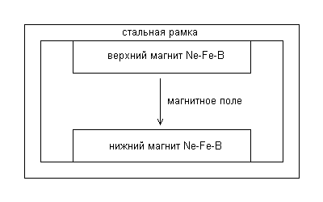

Магнитная система для оперативного уничтожения (стирания) информации на видеокассетах формата VHS
Введение
Магнитные носители, в том числе видеокассеты формата VHS (Video Home System), широко используются для хранения различной информации, иногда имеющей конфиденциальный характер. В некоторых случаях необходимо быстро уничтожить записанную на видеокассете информацию или просто произвести быструю очистку кассеты. Сделать это можно с помощью установки, создающей переменное (или импульсное) магнитное поле [4]. Альтернативное решение, основанное на применении высокоэнергетических постоянных магнитов, позволяет обойтись даже без использования электроэнергии.
Теория
Запись информации на магнитный носитель производится с помощью магнитной головки [1, 6]. Она создает магнитное поле, достаточное для локального перемагничивания рабочего магнитного слоя носителя. С ее же помощью можно стирать информацию, но для этого требуется много времени, так как размеры головки невелики по сравнению с размерами носителя. Поэтому для быстрого уничтожения записей на магнитных носителях необходимо использовать внешнее переменное (в частности, импульсное) или постоянное магнитное поле, величина напряженности которого обеспечивает полное перемагничивание или размагничивание магнитного слоя носителя.
Магнитные свойства материала рабочего слоя видеокассет [3]
| Материал | Коэрцитивная сила, кА/м | Остаточная индукция, Тл |
| g-Fe2O3 | 21 ... 32 | 0.08 ... 0.21 |
| CrO2 | 36 ... 55 | 0.14 ... 0.16 |
| Co-g-Fe2O3 | 40 ... 55 | 0.14 ... 0.19 |
| Fe | 80 ... 165 | 0.3 ... 0.4 |
Анализ магнитных свойств материалов, применяемых в производстве видеокассет, позволяет сделать вывод, что для стирания большинства типов видеокассет достаточно создать в рабочем зазоре магнитной головки поле напряженностью 100 кА/м. Закономерно возникает вопрос - достаточно ли внешнего магнитного поля такой же напряженности, чтобы обеспечить выполнение этой же задачи, учитывая, что магнитная лента в видеокассете свернута в рулон? Или необходимо применять более сильные магнитные поля?
Эксперименты
Для проведения экспериментов по стиранию информации с видеокассет VHS использовался бытовой видеомагнитофон соответствующего формата и различные устройства, позволяющие создавать в объеме видеокассеты переменное или постоянное магнитное поле, а также тесламетры для контроля индукции стирающего магнитного поля [5]. С помощью видеомагнитофона производилась запись информации на кассету (изображение и речь) и осуществлялся контроль качества стирания. Было установлено, что полное стирание (т. е. отсутствие различимых кадров или речи) происходит только тогда, когда напряженность внешнего магнитного поля достигает примерно 400 кА/м. При использовании стирающих полей меньшей напряженности оставались различимые фрагменты записи. Эти фрагменты были тем длиннее и тем более высокого качества, чем меньшей напряженности поле применялось для стирания. Одиночные постоянные магниты с индукцией на поверхности порядка 100 мТл (кольца и пластины из феррита бария, которые прикладывались к видеокассете) вообще практически не оказывали влияния на качество записи.
Техническая реализация устройства на постоянных магнитах для стирания видеокассет VHS
С учетом вышеизложенного была сконструирована и испытана магнитная система в виде стальной рамки, на которой укреплены постоянные спеченные магниты состава неодим-железо-бор.

Размещенная в упаковочной коробке видеокассета, запись на которой необходимо уничтожить, проталкивается в прямоугольное отверстие магнитной системы. Индукция магнитного поля внутри системы в зоне прохождения видеокассеты (зона размагничивания) достигает 0.5 Тл, что соответствует напряженности 400 кА/м. Качество стирания таково, что при просмотре на бытовом видеомагнитофоне фрагменты изображения и речи отсутствуют, и составить представление об имевшейся на видеокассете информации невозможно.
Разработанное устройство может применяться с той же целью уничтожения информации и на других магнитных носителях, габариты которых позволяют протолкнуть их через зону размагничивания, а магнитные свойства рабочего слоя соответствуют аналогичному у видеокассет: аудиокассеты, дискеты и т. п., а также, возможно, винчестеры. Необходимо учитывать, что винчестеры при таком способе обработки в отличие от кассет и дискет безвозвратно утрачивают работоспособность [4].
Соотношение между напряженностью магнитного поля и индукцией
В вакууме или воздухе:

где H – напряженность магнитного поля, B – индукция магнитного поля, m0 = 4p10-7 В ∙ сек/А ∙ м = 4p10-7 Гн/м – магнитная постоянная [2].
Тогда:
1 Тл = 1000 мТл <===> 796 кА/м
100 мТл <===> 79.6 кА/м
100 кА/м <===> 126 мТл
1000 кА/м <===> 1.26 Тл
Ссылки:
22.11.2006
23.06.2010
Альтернативные источники
энергии
Компьютеры и
Интернет
Магнитные поля
Механотронные системы
Перспективные
разработки
Электроника и
технология